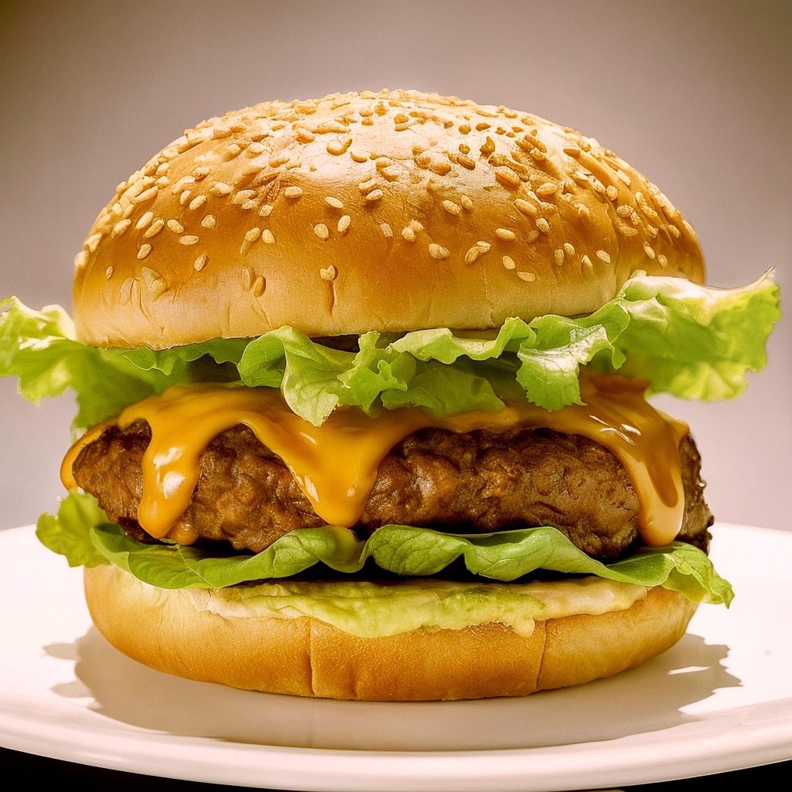

This is the world famous cheeseburger recipe made by john cheeseburger himself! On this page you will find all the ingredients need to make this recipe from scratch as well as the instructions to do so.